class: center, middle ## Machine Learning: history, applications, recent successes Arthur Mensch .affiliations[  ] --- ## Machine learning crash course - Applications, history, limits - General concepts, goals and caveats - Mathematics: - Statistics/ Linear algebra / Optimisation - Programming: - Numerics in Python / Scikit-learn / Deep learning - Data: SQL --- ## Team Pierre Ablin (ENS, DMA) Mathieu Blondel (Google) Pierre Senellart (ENS, DI) Arthur Mensch (ENS, DMA) --- ## Course organisation ### Online course 9h - 10h30, 11h - 12h30 ### Online lab 14h - 17h - Based on Python notebooks (4 first days) - Your own Python install, or Colab - Teachers will be available on Discord --- ## Plan of this lecture - What is machine learning ? A brief history - Broken locks and recent successes - Computer vision - Text analysis - Speech analysis - Game playing - Human behavior modelling --- ## What is machine learning ? - Term that has become common all the way up to general media (since 2015) - Often heard along the words - "Artificial Intelligence"/"Deep learning" - A century-old concept that I'll try to introduce --- ## What is a machine ? .center[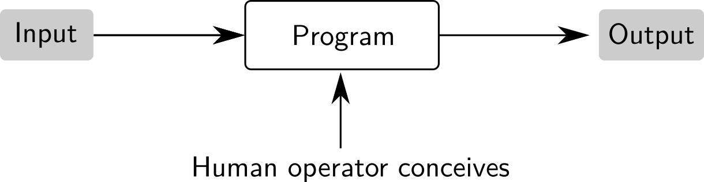] Standard *computer science* paradigm. Program a.k.a. algorithm <div class='column'>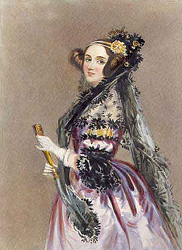 Ada Lovelace</div> <div class='column'><img src="images/von_neumann.gif" width="100%" />Von Neumann</div> <div class='column'>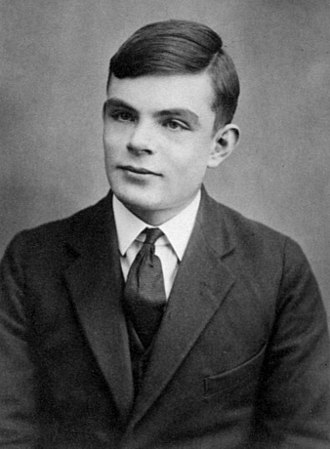Alan Turing</div> <div class='column'><img src="images/edsger_dijkstra.jpg" width="100%" />Edsger Dijsktra</div> --- ## What is an intelligent system ? .center[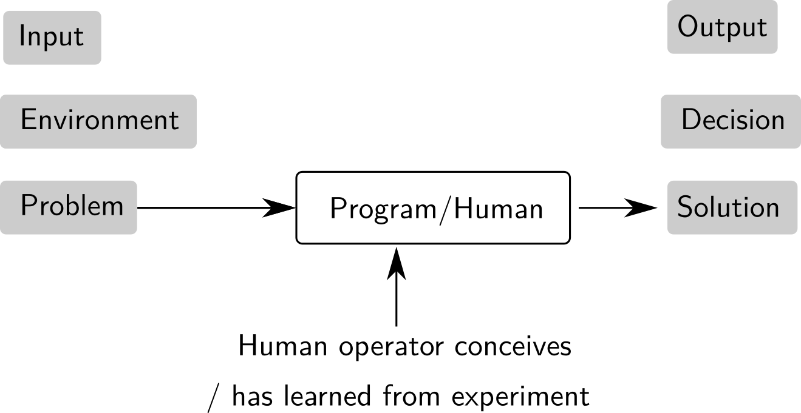] If the agent is a machine: *artificial intelligence* (term coined in 1956) --- ## How do we become intelligent ? .center[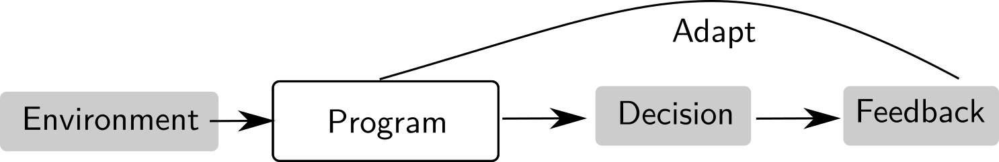] .center[**Learning by trial and error**] --- ## How do we become intelligent ? .center[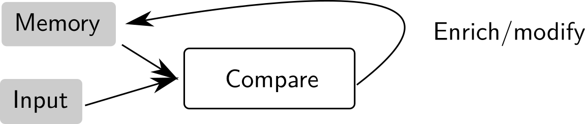] .center[**Learning by organizing new knowledge**] --- ## How do we become intelligent ? .center[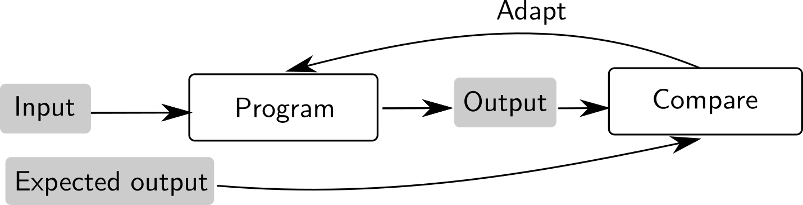] .center[**Learning by comparison with a reference**] --- ### What do we know about intelligence ? - Psychology/behavior study: learning processes - Neuroscience: better understanding of the brain - Humans use the three type of learning above .left-column[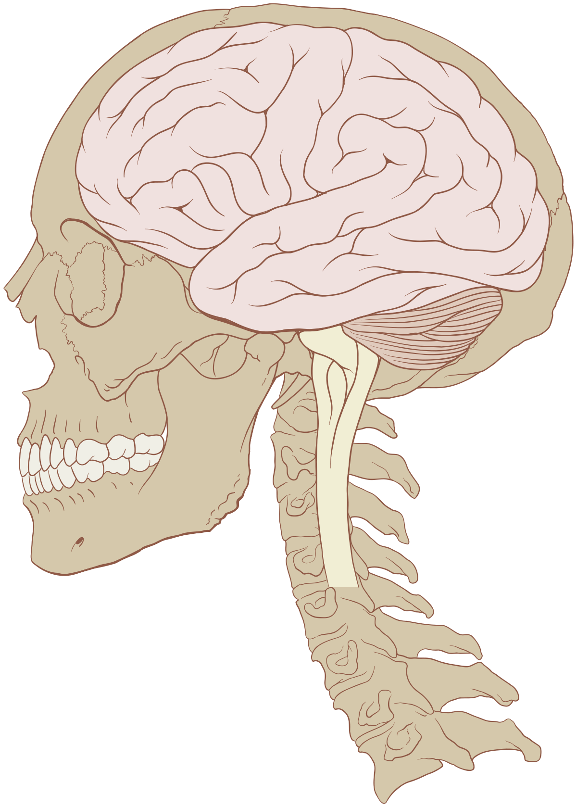] .right-column[<img src="images/neuron.png" width="100%" />] --- ## How can a machine learn ? Supervised learning process .center[] Implementing a program that learns from supervision .center[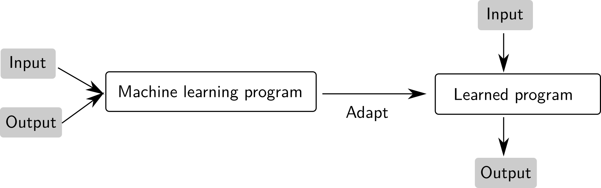] --- ## Machine learning as a field - A subfield of "artificial intelligence" (computer science), where *intelligence* is acquired from *data* .center[] - Extract information from data: relies on statistics - Training relies on optimization and mathematics --- ## A brief history #### AI boom 1950-1970 - Perceptron: a first attempt to classify images (1958) - AI at the time was mostly symbolic reasoning (not from data) - AI booming, until 1970 #### AI winter 1970-1980 - Too hard a problem ! Researcher were over optimistic. <div class='column'>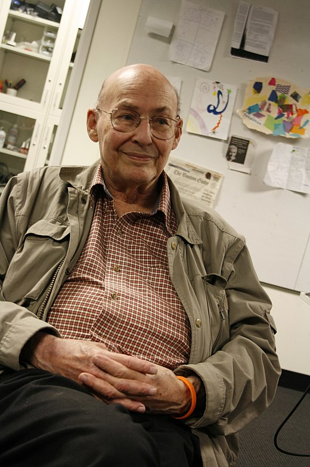<br>Marvin Minsky</div> <div class='column'><br>Frank Rosenblatt</div> <div class='column'><img src="images/shannon.jpg" width="60%" /><br>Claude Shannon</div> --- ## A brief history #### 1980s : Progress in modelling: neural-networks, training techniques .center[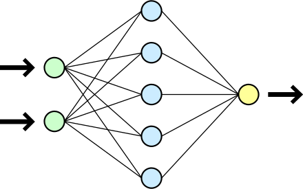] #### 1990s-2000s: - AI shifts from symbolic reasoning to machine learning (from data) - Progress in statistics: what can be learned ? - Models simple enough to be analysed (SVM/generalized linear models) - First applications (character recognition) - Progress in behavior modelling: *Netflix recommendation* --- ## A brief history #### The 2010 turn: - Large datasets are acquired (ImageNet + Web expansion) - Progress in parallel computing (GPU) #### After 2010: new AI / deep learning boom - Complex (deep) models start working for image classification (2012) - For text analysis (first 2014 and re-boom in 2017) - Audio processing (2016: speech recognition) - Scene understanding, face recognition (2014--) - Games: solving ATARI (2015--), Go (2016), ... --- ## The new boom explained - Computational power .center[<img src="images/gpu_tpu.png" width="35%" />] - Powerful programming frameworks .center[<img src="images/frameworks.png" width="50%" />] --- ## The new boom explained - Available datasets and growing data corpus - Money and people .center[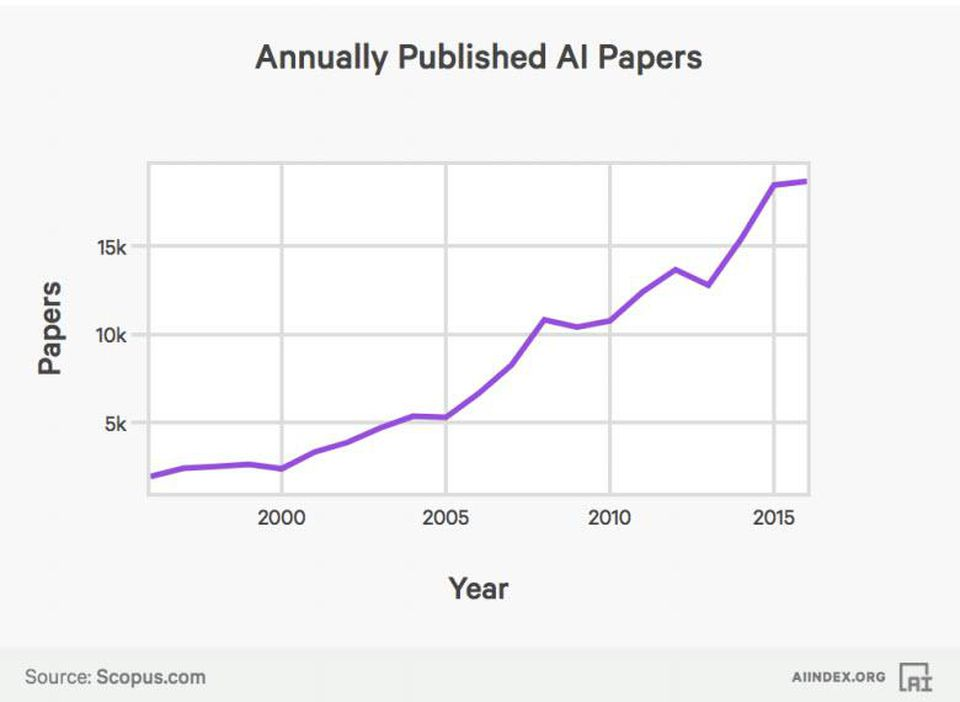 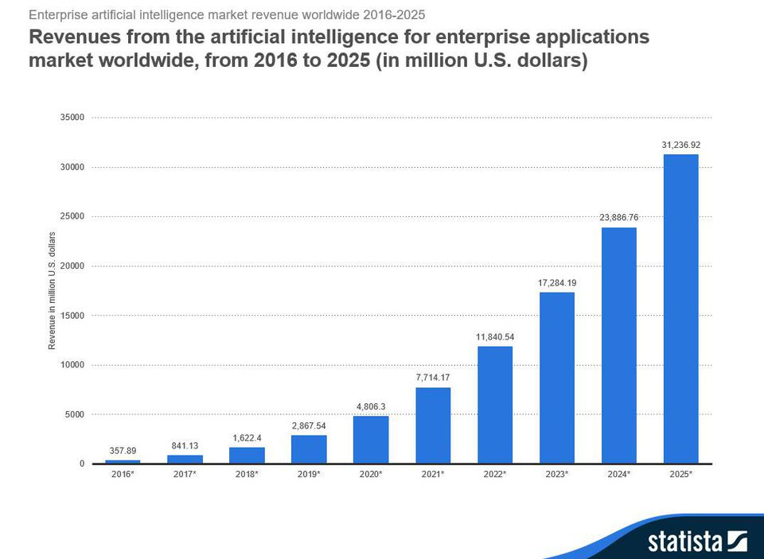] - Privately funds from the GAFAM, public funding from Chinese governement --- ## Machine learning is now everywhere 1. Computer vision 2. Speech processing 3. Text understanding 4. Game playing 5. Behavior modelling --- ## Image processing .center[ 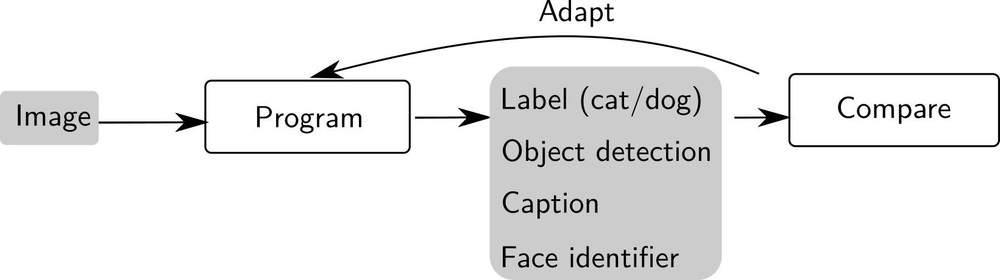 ] --- ## Image processing .center[ <img src="images/vision.png" style="width: 680px;" /> ] .credits[Slide courtesy of https://github.com/m2dsupsdlclass/lectures-labs] --- ## Image processing .center[ <img src="images/vision2.png" style="width: 720px;" /> ] .credits[Slide courtesy of https://github.com/m2dsupsdlclass/lectures-labs] --- ## Image processing: the good .center[ ] --- ## Image processing: the bad .center[ ] --- ## Image processing: the ugly .center[ 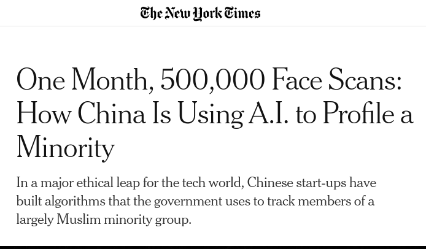 ] --- ## Text processing .center[ 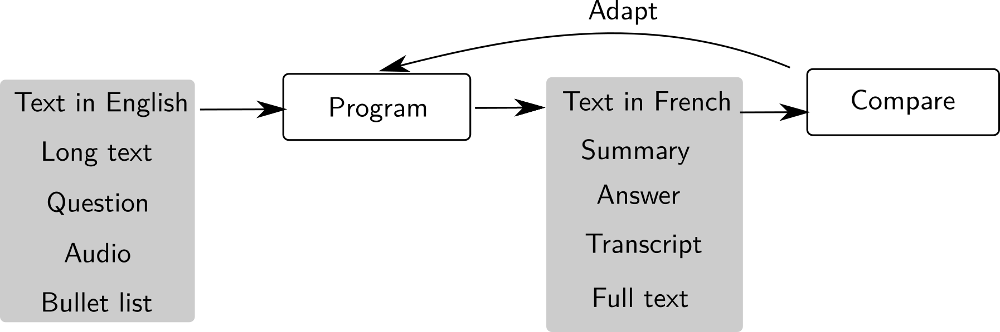 ] --- ## Text processing .center[ <img src="images/nlp.png" style="width: 720px;" /> ] .credits[Slide courtesy of https://github.com/m2dsupsdlclass/lectures-labs] --- ## Text processing .center[ <img src="images/nlp2.png" style="width: 720px;" /> ] .credits[Slide courtesy of https://github.com/m2dsupsdlclass/lectures-labs] --- ## Text/speech processing - GPT-3 [2020] requires only a few examples of a task to generalize. [example](pic.twitter.com/HFjZOgJvR8) .center[ 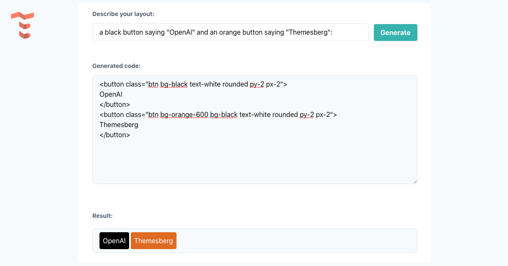 ] --- ## Text/speech processing --- ## Combining modalities .center[ <img src="images/nlp_vision.png" style="width: 720px;" /> ] .credits[Slide courtesy of https://github.com/m2dsupsdlclass/lectures-labs] --- ## Generating false data .center[ 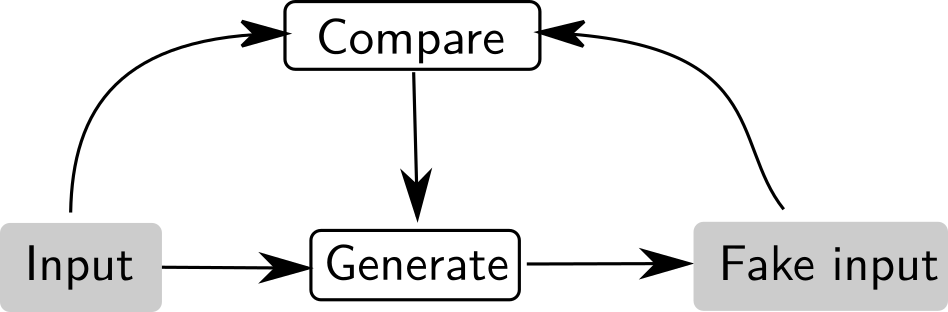<br> ] --- ## Generating false data .center[ <img src="images/nvidia_celeb.jpg" style="width: 400px;" /><br> [StyleGAN2 2018] ] .center[ <img src="images/WaveNet.gif" style="width: 400px;" /><br> [WaveNet 2017] ] --- ## Generating false data <iframe id="ytplayer" type="text/html" width="640" height="360" src="http://www.youtube.com/embed/p5U4NgVGAwg" frameborder="0"/> --- ## ML for other sciences .center[ <img src="images/dermato.png" style="width: 720px;" /> ] --- ## ML for other sciences .center[ <img src="images/latent.png" style="width: 720px;" /> [Brain decoding, M et al. 2018] ] --- ## Playing games .center[ 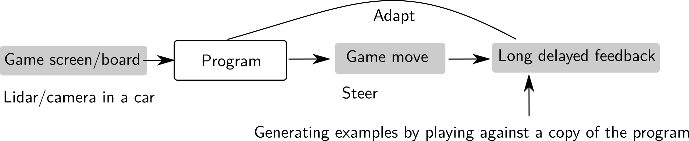] --- ## Playing games .center[ <img src="images/games.png" style="width: 720px;" />] --- ## Influencing human behavior via profiling .center[ 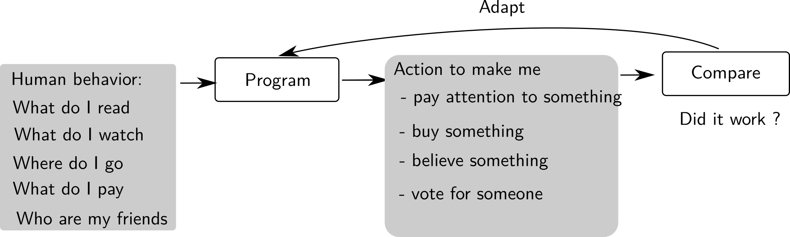] --- ## Influencing human behavior via profiling .center[ ] .credits[Criteo website] --- ## Influencing human behavior via profiling .center[ <img src="images/cambridge_analytica.png" style="width: 720px;" />] --- ## Limit of machine learning - Model trained from data: as biased as the data itself - facial recognition systems works less well on minorities - CV rating systems learn socio-economic biases - Predictive model may fail on slightly perturbated input - Non robust, hence non deployable - As of today ! --- ## Next course - The principles of machine learning